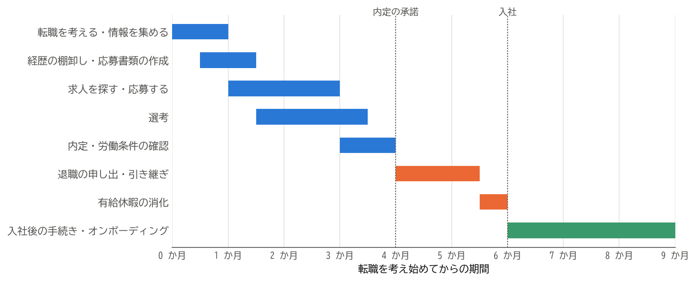

2. 転職の全体像
この章では、転職を考え始めてから入社後の数か月までの流れと、各段階のおおよその期間を示す。個々の行動や手続きの詳しい説明は、次の章以降で行う。
2.1. 転職の流れ
転職の流れは、大きく次の 4 つの段階に分けられる。
段階 |
主な行動と手続き |
詳しい説明 |
|---|---|---|
準備 |
転職の動機の整理、キャリアの方向性の検討、経歴の棚卸し、応募書類の作成 |
|
転職活動 |
求人を探す、応募する、選考を受ける、内定を得る、労働条件を確認する |
|
退職 |
退職の申し出、引き継ぎ、情報とアカウントの整理、年次有給休暇の消化 |
|
入社 |
公的な手続き、転職先への書類の提出、入社後の業務への適応 |
各段階に必要な期間は、人や状況によって大きく異なる。図 2.1 は、在職中に転職活動を行う場合の一例である。


図 2.1 転職の流れと各段階の期間の例
この例では、考え始めてから内定を承諾するまでに約 4 か月、内定の承諾から入社までに約 2 か月かかっている。実際には、希望に合う求人がすぐに見つかれば 2〜3 か月で済むこともあれば、なかなか見つからず半年以上かかることもある。
期間を見積もるうえで注意したいのは、次の 2 点である。
選考は並行して進む：複数の会社に応募すると、ある会社の書類選考と別の会社の面接が同時に進む。日程の管理については 6.9 節で説明する。
内定の承諾から入社までは短くできない：退職の申し出から退職日までには、引き継ぎと有給休暇の消化の期間が必要になる。転職先には、この期間を考慮した入社日を伝える必要がある（内定と労働条件の確認）。
2.2. 在職中に活動するか、退職後に活動するか
転職活動は、現職で働きながら行う方法と、退職してから行う方法がある。それぞれの特徴は次のとおりである。
観点 |
在職中に活動する |
退職後に活動する |
|---|---|---|
収入 |
収入が途切れない。 |
収入が途切れる。雇用保険の基本手当を受け取れる場合もあるが、自己都合退職では給付制限がある。 |
時間 |
業務と並行するため、活動に使える時間が限られる。面接の日程の調整も難しい。 |
活動に集中できる。 |
心理的な余裕 |
次が決まらなくても現職を続けられるため、焦らずに選べる。 |
空白期間が長くなるほど焦りが生じ、条件に妥協しやすくなる。 |
選考での見られ方 |
特に不利になることはない。 |
空白期間が長いと、その理由を質問されることが多い。 |
手続き |
退職日の翌日に入社すれば、社会保険の手続きの多くを会社が行う。 |
健康保険、年金などの切り替えを自分で行う必要がある。 |
心身の不調などで現職を続けることが難しい場合を除き、本書は在職中に活動することを勧める。収入と心理的な余裕を保ったまま、納得できる転職先を選べるからである。本書の説明も、在職中に活動する場合を基本としている。
2.3. 注意すべき期限
転職に伴う行動と手続きには、期限が決まっているものがある。主なものを次の表に示す。
期限 |
内容 |
詳しい説明 |
|---|---|---|
内定の通知から、会社が指定する日まで（数日から 1 週間程度が多い） |
内定の承諾または辞退の回答 |
|
退職日の 2 週間前まで（民法の規定。就業規則で 1 か月前などと定めている場合が多い） |
退職の申し出 |
|
退職日の翌日（資格喪失日）から 14 日以内（空白期間がある場合） |
国民健康保険への加入、国民年金の種別の変更 |
|
退職日の翌日（資格喪失日）から 20 日以内（空白期間がある場合） |
健康保険の任意継続被保険者の申請 |
|
資格喪失日の属する月の翌月から 6 か月以内 |
企業型 DC（企業型確定拠出年金）の資産の移換（前職で加入していた場合） |
|
入社した年の年末調整まで |
前職の源泉徴収票の提出 |
2.4. まとめ
転職は「準備」「転職活動」「退職」「入社」の 4 つの段階で進む。
考え始めてから入社までは、数か月から半年以上かかることが多い。内定の承諾から入社までにも 1〜2 か月程度を見込む。
収入と心理的な余裕を保つため、できるだけ在職中に転職活動を行う。
期限のある手続きは、早めに把握しておく。